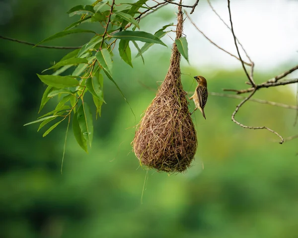
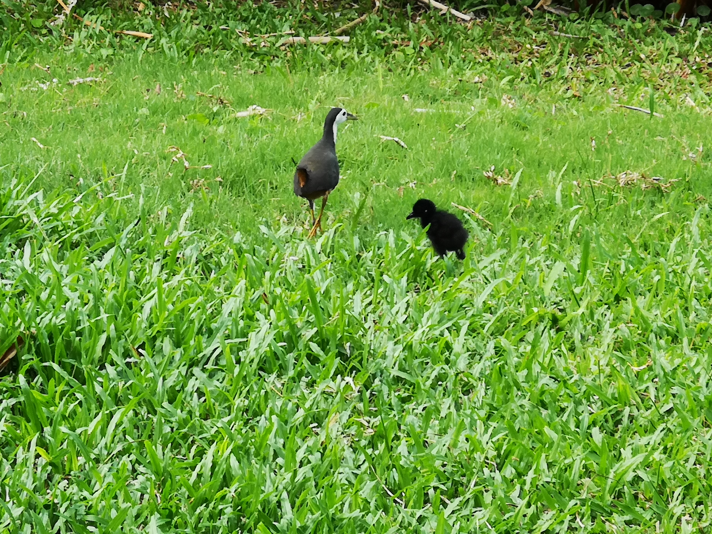

Have you heard this sound before? The "uwu" bird belongs to our native Asian Koels, in particular the males!. Watch this video above and learn about this species of bird found in Singapore.
Spending time out in nature, one cannot help but admire our beautifully coloured avian friends darting from tree to tree and from pond to pond. The nature lover in me cannot help but be awestruck by the wonders of our avian friends as they frolick in both the natural and urban landscape of Singapore.
Nest building by the Baya Beaver
Walking along the paths of Coney Island, I stopped and spent a quarter of an hour staring. At what, you may ask? The tree!
Darting around was the Bava Weaver (Ploceus philippinus), known as an architect of nature. You would often find them in open habitats like grasslands and fields, and will see them building their nests on branches of trees. My most recent encounter with them was along a stretch of grasslands at Coney Island!
Family of White-Breasted Waterhens
Whenever I travel to Punggol Waterway for a jog, I will always spend some time admiring the families of White-Breasted Waterhen (Amaurornis phoenicurus) feeding along the water's edge.
Adults can be identified by their black upperparts and white face, neck and breast, while juveniles are often downy (think fluffy-feathered) and black in colour. Their long legs help them forage in the shallows of the water's edge to find food.